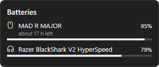
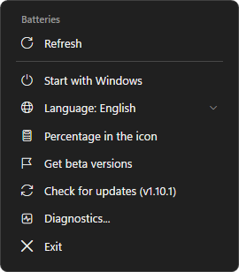
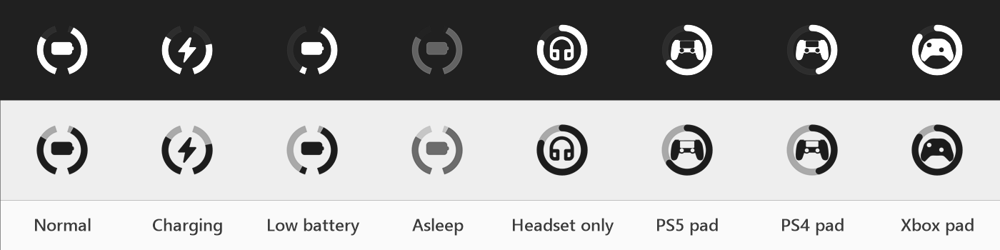

Mouse, keyboard, headset and controller battery levels in the Windows tray, without vendor software running in the background.
Download for Windows All downloads


A level is shown only when the device itself answered. Rough readings are marked as approximate.
One small program, about 10 MB of memory. No services, no vendor apps, no account.
Windows notifications when a battery runs low, held back until your full-screen game is over.
An estimate of the hours left, learned from how fast each device drains.
New versions come from GitHub with one click, each checked against its SHA-256.
English, Türkçe, Deutsch, Español and Italiano. Light or dark, like your taskbar.
The exact models are listed on GitHub. Device missing? Right-click the icon > Diagnostics… and attach the file to a device report.
Prefer no installer? SwarlexBattery.exe from the
release page runs as it is.
Windows SmartScreen may warn the first time because the files are new; every release is built from the public
source by GitHub Actions (code signing policy).